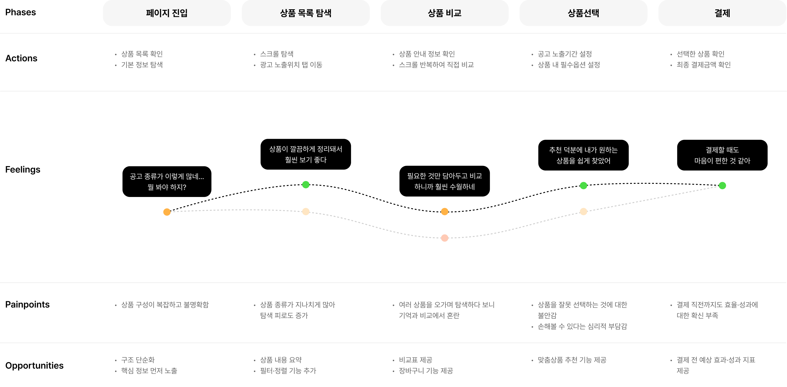
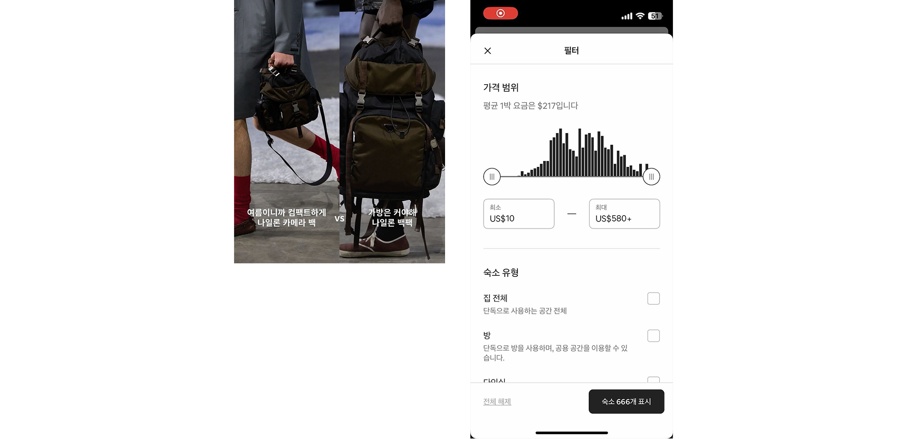
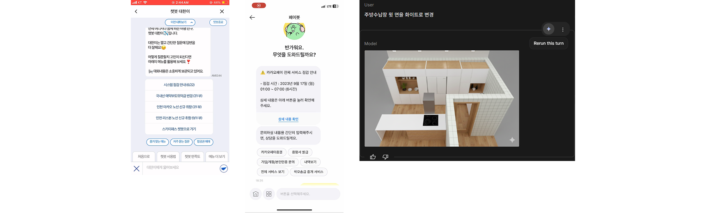
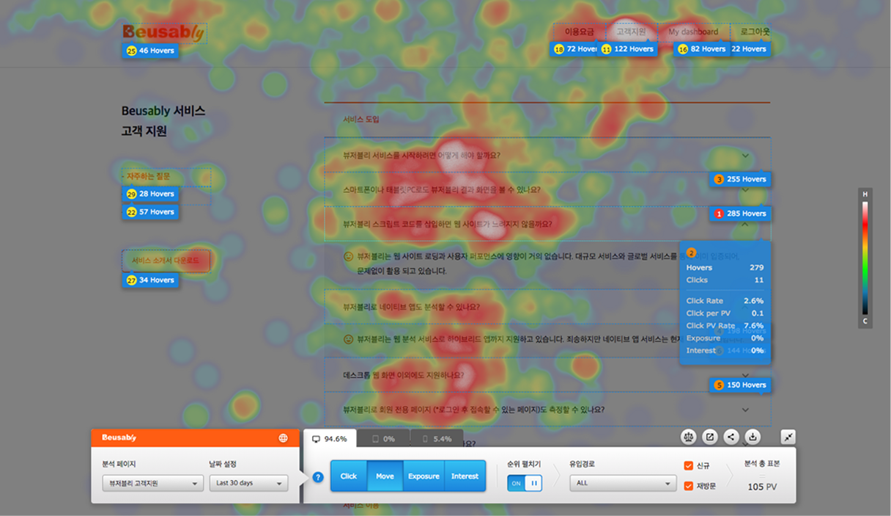
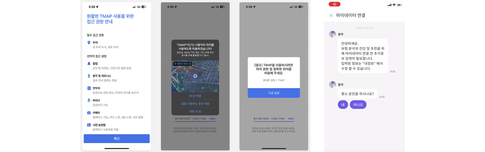

프로덕트 디자이너를 위한 프론트엔드 개발 융합 실무 과정
중요성 · 필요한 3가지 · 문제 정의문 작성법 · 좋은 정의 판별
데이터로 문제 발견 · 정량/정성 · 여정맵 · 2026 트렌드 · 보고서
개념 · 문서 비교 · 문제정의문→PRD · 문서 계층 · SSOT · 실무 프로세스
개념 · 배달앱 적용 예시 · 흔한 실수
첫 주문 18%
재방문 유저 편향
한 문장
팀 전달
명확한 문제 정의는, 검증된 PRD를 만듭니다.
배우는 순서 ≠ 실무 적용 순서 — 강의는 정의(Part 1)부터, 실무는 발견(Part 2)부터 시작합니다.
사용자의 문제를 정확히 이해하는 데서
시작해, 실질적 가치를 주는 솔루션을 설계합니다.
프로젝트의 방향성을 정하고 목표를 명확히 하는 데 필수입니다.
문제가 명확하면 팀원이 같은 목표를 향해 효율적으로 일합니다.
사용성·심미성을 넘어, 제품이 시장에서
성공하도록 방향을 잡습니다.
잘못된 방향으로 자원을 쓰기 전에 문제
자체를 검증합니다.
시간·인력·비용을 효율적으로 배분하고 활용합니다.
01
사용자의 목적과 기대를 파악해야 문제를 정확히 이해할 수 있습니다.
02
기대 상태와 현재 상태를 비교하고,
벤치마킹으로 목표를 명확히 합니다.
03
유저 리서치와 데이터로 문제를 정의하고, 가장 효과적인 해결책을 찾습니다.
데이터로 발견하고 5 Whys로 진단했다면, 팀이 공유할 한 문장으로 압축합니다.
“신규 사용자는 첫 끼니를 빠르게 주문하고 싶지만, 가치를 느끼기 전에
주소 입력을 요구받고 배달비를 결제 직전에야 마주쳐,
첫 주문을 완료하지
못한 채 이탈합니다.”
POV(Point of View)
“신규 사용자는 ‘지금 뭘·얼마에 시킬 수 있는지’ 먼저 알 방법이
필요하다. 첫 경험의 확신이 첫 주문의 조건이므로.”
HMW(How Might We)
“어떻게 하면 신규 사용자가 주소·결제 부담 전에 ‘주문할 이유’를
확신하게 할까?”
POV는 문제를 날카롭게 만들고, HMW는 해결의 문을 여는 질문입니다.
신규 사용자는 가치를 느끼기 전 주소·배달비 부담에 막혀 첫 주문을 못 하고 이탈한다
신규 사용자는 ‘지금 뭘·얼마에’ 먼저 알 방법이 필요하다
어떻게 하면 부담 전에 ‘주문할 이유’를 확신하게 할까?
답을 미리 정하지 않습니다.
정의문에 솔루션이 들어가면 탐색이 닫힙니다.
데이터로 확인할 수 있어야 합니다.
지표 없는 문제는 검증도 없습니다.
회사의 목표가 아니라 사용자의 고통을 기술합니다.
한 스프린트에 다룰 수 있는 크기로 좁힙니다.
| 나쁜 정의 | 좋은 정의 | 고친 점 |
|---|---|---|
| “주소 입력창을 간소화하자” | “신규 유저가 가치를 느끼기 전 주소 입력을 요구받아 이탈한다” | 해결책 → 문제 ① |
| “온보딩이 별로다” | “첫 실행 후 주소 설정 단계에서 27%p 이탈한다” | 막연함 → 측정가능 ② |
| “첫 주문 전환율을 올려야 한다” | “신규 유저가 첫 주문할 ‘이유’를 진입 시점에 못 찾는다” | 회사목표 → 사용자관점 ③ |
“주소 넣기 귀찮아 삭제” · “배달비 보고 나감”
“뭘 시킬지 보기도 전에 위치부터 물어봐요”
주소 화면에서 Rage Tap과 과다 체류 관찰
정량은 ‘어디서’, 정성은 ‘왜’ — 합쳐야 문제가 보입니다. 모든 수치는 강의용 예시 데이터입니다.
| 구분 | 브라커스 외 (2009) | 홀랜드 (2013) | 개념의 비교 |
|---|---|---|---|
| UX | 제품 경험 | 사용자 경험 | 소비자(사용자)가 제품을 탐색하고 조사해 보고 평가해보면서 발생하는 경험 |
| CX | 쇼핑 및 서비스 경험 | 고객 경험 | 제품이나 서비스 매장의 물리적 환경이나 판매원으로부터 영향을 받는 경험 |
| 소비 경험 | 소비자가 제품을 사용하거나 소비하면서 나타나는 경험 | ||
| BX | 브랜드 경험 | 브랜드 경험 | 브랜드와 관련된 자극이 소비자의 주관적이고 내재적인 반응과 결합되어 일어나는 경험 |
출처: 〈브랜드 디자인학 연구〉 중 BX 개념적 고찰 / dsruptr.com (2019)
서비스 형태에 따라 측정 도구가 달라집니다. Web은 GA4로 충분하지만, App은 설치 성과(MMP)와 인앱 행동(PA)을 함께 측정해야 합니다.
뜻 웹·앱 사용자 행동을 재는 구글의 통합 애널리틱스
쓰임 Web 위주 서비스 —
단독으로 충분
뜻 앱스토어에 SDK를 붙여 앱 ‘설치’ 성과·유입을 측정하는 파트너
쓰임 App
위주 — 설치 성과·유입 경로 · Appsflyer · Adjust · Airbridge
뜻 MMP를 연동해 ‘설치 이후’ 인앱 행동(구매·리텐션)을 분석
쓰임 App 위주
— 설치 다음 단계 · Amplitude · Mixpanel
내부 제품에 SDK 탑재 ＋ 외부 광고 채널 성과 → 각 도구 대시보드에서 통합 확인
고객의 감정·태도·기대를 이해합니다.
설문과 인터뷰로 수집하며 심층 인사이트를 얻는 데 유리합니다.
내부
앱스토어 리뷰, CS 문의, 체험단 코멘트.
외부
설문 결과, SNS·포털 커뮤니티 반응.
고객이 직접 제공한 의견을 분석해 문제를 식별하고 개선 기회를 찾습니다.
설문·리뷰·소셜미디어에서 수집합니다.
설문 · 리뷰 · 소셜
주제별 태깅과 빈도
우선순위 → 실험
지표 재측정 → 순환
예: 리뷰에서 다수가 배송 지연을 지적 → 물류 시스템 개선으로 연결.
수집한 CX 데이터를 어피니티 다이어그램으로 분류하고,
본인의 페인포인트에서 출발해 데이터 근거를
마련합니다.
기본
수집한 데이터를 분류하고, 반복되는 패턴이나 문제 현상을 식별합니다.
심화
현상 너머의 원인을 파고듭니다.
→ Part 4 · 5 Whys 기법과 연결됩니다.
실무의 완성형 CX 분석 보고서는 '여기서 더 나아가면 이런 것까지 간다'는 지향점으로만 안내합니다.
전체 과정을 시각화해 각 접점의 경험을 분석하고, 단계별 문제를 식별합니다.
여정의 단계 구분
단계별 사용자 행동
접점 — 화면·채널·사람
생각과 감정 곡선
막히는 지점
개선 기회 도출
전제: 페르소나·시나리오가 먼저 정의돼야 성립합니다 · 분석 항목 예(교육 콘텐츠): 콘텐츠 소비 패턴 / 전환율 / 이탈율

2026 CX 데이터 수집을 위한 5대 핵심 키워드 · 01/05
사용자가 브랜드에 자발적으로 제공하는 데이터(취향, 피부 타입, 투자 성향 등)를 ‘제로 파티 데이터’라고 합니다.
지루한 설문조사 대신,
게임이나 퀴즈 형태의 ‘상호작용형 입력 도구’가 표준이 될 전망입니다.
CX 데이터 수집 포인트
“어떤 스타일을 원하세요?”를 묻는 대신, 이미지 이상형 월드컵을 진행하여 취향
데이터를 수집.
텍스트 입력 대신 슬라이더를 조절하며 자신의 예산이나 선호도를 입력하게 유도.
문제정의 시사점 — 사용자가 자발적으로 제공한 데이터는 페인포인트 정의의 가장 신뢰도 높은 근거가 됩니다.

2026 CX 데이터 수집을 위한 5대 핵심 키워드 · 02/05
검색창에 키워드를 치는 것이 아니라, 자연어로 대화하며 사용자의 숨겨진 니즈(의도)를 파악하는 UI입니다. 디자이너는 AI가 사용자에게 ‘되물어보는(Follow-up Question)’ 시나리오를 설계하여 구체적인 데이터를 확보할 수 있습니다.
예시
사용자가 무엇을 물어볼지 몰라 할 때, 선택 가능한 질문 칩(Chip)을 제시하여
관심사 데이터를 수집.
AI 답변에 대해 “좋아요/나빠요” 혹은 “다시 생성해줘” 버튼을 배치하여, 사용자의 만족도 데이터를 실시간으로 수집.
문제정의 시사점 — 대화 로그에서 반복되는 질문 패턴이 곧 해결되지 않은 문제를 가리킵니다.

2026 CX 데이터 수집을 위한 5대 핵심 키워드 · 03/05
사용자가 직접 입력하지 않아도, 스마트폰 센서(카메라, GPS, 자이로스코프)를 통해 사용자의 환경과 행동 데이터를 수집하는 UX입니다. ‘카메라 렌즈’가 텍스트 검색창을 보완하는 강력한 데이터 수집 도구로 부상하고 있습니다.
CX 데이터 수집 포인트
텍스트 입력 대신 사진을 찍어 상품을 찾게 함으로써, 사용자의 현재 상황(맥락)
데이터를 수집.
사용자가 AR로 가구를 배치해보거나 안경을 써보는 과정에서, ‘얼마나 오래
머물렀는지(Dwell Time)’, ‘어떤 각도로 보았는지’ 행동 데이터를 추적.
문제정의 시사점 — 센서 데이터는 사용자가 말로 표현하지 못하는 맥락적 페인포인트를 드러냅니다.
2026 CX 데이터 수집을 위한 5대 핵심 키워드 · 04/05
고령층 사용자가 겪는 어려움은 곧 서비스의 개선 포인트입니다. 디자이너는 사용자가 어디서 멈칫거리는지, 어디서 잘못 누르는지 ‘에러 데이터(Rage Tap·도움말 호출)’를 수집하여 UX를 최적화하는 ‘간편 모드’를 설계할 수 있습니다.
CX 데이터 수집 포인트
버튼이 아닌 곳을 반복적으로 누르거나, 세게 누르는 행위를 감지하여 UI 문제를 파악.
특정 화면에서 오래 머물거나 ‘도움말’을 찾는 행동을 데이터화하여 인지 부하가 높은 구간을 식별.
문제정의 시사점 — 에러 데이터(Rage Tap·도움말 호출)는 인지 부하가 높은 구간을 정량적으로 지목합니다.

2026 CX 데이터 수집을 위한 5대 핵심 키워드 · 05/05
사용자가 자신의 데이터를 기업에 넘겨줄 때 느끼는 불안감을 해소하고, ‘데이터 주권’을 보장하는 UI입니다.
“왜 이 데이터를 수집하는가?”를 시각적으로
명확히 설명해야만 데이터 수집 동의율을 높일 수 있습니다.
CX 데이터 수집 포인트
앱 설치 직후가 아니라, 특정 기능(예: 지도)을 쓸 때 권한을 요청하여 동의율을 높임.
사용자가 자신이 제공한 데이터를 확인하고 언제든 철회할 수 있는 ‘MY 데이터
관리’ 페이지 설계.
문제정의 시사점 — 동의율 하락 자체가 신뢰 문제라는 페인포인트의 정량 근거가 됩니다.

데이터 오케스트레이션을 통해 고객에 대한 깊이 있는 이해를 바탕으로 보고서를 작성함으로써 조직의 의사결정자들에게 유용한 정보를 제공할 수 있습니다. 또한 측정 가능한 데이터 분석을 통해 고객 이탈률, 고객 생애 가치, 문제 해결 시간 등의 구체적인 지표(정량)를 포함하면 보고서의 가치를 높일 수 있습니다.
실무의 CX 분석 보고서엔 아래와 같은 데이터를 넣습니다.
PRD는 제품의 문제 공간(Problem Space)과 솔루션 범위(Scope)를 정의하는 전략 문서입니다.
구성요소
배경·목적(Context & Goals) / 사용자 스토리 / 성공 지표(KPI·OKR) / 제약·비기능 요구사항 / 비대상 범위(Out of Scope)
역할
개발 로드맵 · 커뮤니케이션 도구 · 의사결정의 기준점
| 목적 · 관점 | 표현 방식 | 예시 | |
|---|---|---|---|
| PRD | 무엇을 왜 — 비즈니스·사용자 관점 | 서술형 · 표 · 유즈케이스 | 유저는 로그인으로 콘텐츠에 접근할 수 있어야 한다 |
| UI 정의서 | UI 구성과 흐름 — UX/UI 관점 | 와이어프레임 · 화면 플로우 | 로그인 화면: ID·PW 입력, 로그인 버튼 |
| 기능명세서 | 시스템 동작 — 기술 관점 | 테이블 · 플로우차트 · 시퀀스 | POST /login, JWT 발급, 401 처리 |
북극성 지표와 가드레일 지표를 함께 두는 것이 좋은 PRD의 습관입니다 · 수치는 강의용 예시 데이터.
비즈니스 배경 · 성공 지표 · 핵심 스토리 · Scope
산출물: 컨셉 스케치, lo-fi 와이어 · 도구: Notion, Confluence, Docs
유저 플로우 · 상태 다이어그램 · IA
산출물: 화면 연결·분기 로직 · 도구: FigJam, Miro(PRD 임베드)
픽셀 퍼펙트 · 컴포넌트 속성 · 인터랙션 · 다크모드/반응형
도구: Figma Dev Mode, Storybook
API 스키마 · DB 구조 · 성능
도구: Github Markdown, Swagger
왜 · 무엇
어떻게 보일지
어떻게 구현
구현
핵심은 정보 중복 회피 — 하나의 권위 있는 출처만 둡니다.
원칙 1
PRD에 ‘#0045FF’ 대신 ‘Primary Action Color 토큰’ 또는 Figma 링크를 씁니다.
원칙 2
비즈니스 로직은 PRD가 진실, UI 디테일은 Figma가 진실. 충돌 시 로직은 PRD, 심미는 Figma를 따릅니다.
스타트업·고속성장팀 — 문서화를 최소화하고 속도를 중시합니다.
PM이 문제정의·가설 공유
PD가 시안 탐색
Figma 링크 임베드, 자동 업데이트
Jira에 PRD + Figma Dev 링크
중견 기업·에이전시 — 책임과 승인 절차가 명확합니다.
PRD v1.0 확정
Screen ID · Element 번호 · 상세 설명
개발 리드 · QA
PDD 버전 up · Changelog
체계화된 조직 — 디자인 시스템이 PDD의 역할을 대체합니다.
화면 스펙 없이 요구사항
PD가 시스템 부품으로 구성
Storybook이 문서 역할
문서 작업 시간 70%↓
표면 현상에서 벗어나 근본 원인을 파악해, 효과적인 해결책에 도달합니다.
현상과 지표 확인
현상의 직접 원인
원인의 원인으로
근본 원인에 대응
지표로 확인
5 Whys는 도요타 생산방식(오노 다이이치)에서 유래했습니다.
현상: 신규 설치 유저의 82%가 7일 내 첫 주문에 도달하지 못합니다(전환율 18%).
왜 첫 주문에 못 가나 → 주소 설정에서 절반이 이탈하고, 결제 직전 비용에서 다시 이탈한다
왜 주소에서 이탈하나 → 가치를 느끼기 전에 위치 권한과 주소부터 요구한다
왜 결제 직전 이탈하나 → 배달비·최소주문금액이 마지막에야 드러나 손해감을 준다
왜 가치를 못 느낀 채 입력하나 → 온보딩이 ‘무엇을·얼마에’를 보여주지 않고 행동부터 요구한다
근본원인 → 앱이 재방문 유저 기준으로 설계됨 = 재방문 유저 편향(Returning-User Bias)
근본원인(Root Cause): 재방문 유저 기준의 설계가 신규 유저의 첫 경험(맥락, 가치, 비용 투명성)을 무시하고 있습니다.
“신규 사용자는 가치를 느끼기 전 주소·배달비 부담에 막혀 첫 주문을 완료하지 못한 채 이탈한다.”
슬라이드 7의 문제 정의문과 동일한 문장 — 발견과 진단이 같은 정의로 수렴합니다.
초점 전환: 재방문 유저 기준에서 신규 유저의 첫 경험 우선으로.
주소 입력 전에 인기 메뉴와 예상 금액을 미리 보여줍니다.
위치 권한을 가게 탐색 시점에 요청합니다(Just-in-Time).
배달비와 최소주문금액을 결제 전에 노출합니다.
기대 결과: 첫 주문 전환율 개선 → Day 7 이탈 병목 해소.
①
1~2 Why에서 멈추고 대응책으로 넘어갑니다.
②
꼭 다섯 번이 아닙니다. 근본 원인에 닿을 때까지 묻습니다.
③
복합 원인을 간과합니다.
결과: 객관성 유지에 실패하고, 해결책 도출에도 실패합니다.
다중 원인에는 피시본(이시카와) 다이어그램·로직트리를 병행하세요.
CX 데이터 분석
5 Whys
문제 정의문
PRD